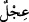

oldular.
149. Pişman olup da kendilerinin gerçekten sapmış olduklarını görünce dediler ki:
Eğer Rabbimiz bize acımaz ve bizi bağışlamazsa mutlaka ziyana uğrayanlardan
olacağız!
150. Musa, kızgın ve üzgün bir halde kavmine dönünce: “Benden sonra arkamda
ne kötü işler yapmışsınız! Rabbinizin emrini (beklemeyip) acele mi ettiniz?” dedi.
Tevrat levhalarını yere attı ve kardeşinin (Harun’un) başını tutup kendine doğru
çekmeye başladı. (Kardeşi): “Anam oğlu! Bu kavim beni cidden zayıf gördüler ve
nerede ise beni öldüreceklerdi. Sen de düşmanları bana güldürme ve beni bu zalim
kavimle beraber tutma!” dedi.
151. (Musa da) Ey Rabbim, beni ve kardeşimi bağışla, bizi rahmetine kabul et.
Zira sen merhametlilerin en merhametlisisin! dedi.
152. Buzağıyı (tanrı) edinenler var ya, işte onlara mutlaka Rablerinden bir gazap
ve dünya hayatında bir alçaklık erişecektir. Biz iftiracıları böyle cezalandırırız.
153. Kötülükler yaptıktan sonra ardından tevbe edip de iman edenlere gelince,
şüphesiz ki o tevbe ve imandan sonra, Rabbin elbette bağışlayan ve esirgeyendir.
154. Musa’nın öfkesi dinince levhaları aldı. Onlardaki yazıda Rablerinden
korkanlar için hidayet ve rahmet (haberi) vardı.
155. Musa tayin ettiğimiz vakitte kavminden yetmiş adam seçti. Onları o müthiş
deprem yakalayınca Musa dedi ki: “Ey Rabbim! Dileseydin onları da beni de daha
önce helâk ederdin. İçimizden birtakım beyinsizlerin işlediği (günah) yüzünden
hepimizi helâk edecek misin? Bu iş, senin imtihanından başka bir şey değildir.
Onunla dilediğini saptırırsın, dilediğini de doğru yola iletirsin. Sen bizim
sahibimizsin, bizi bağışla ve bize acı! Sen bağışlayanların en iyisisin
156. Bize, bu dünyada da iyilik yaz ahirette de. Şüphesiz biz sana döndük.” Allah
buyurdu ki: Kimi dilersem onu azabıma uğratırım; rahmetim ise her şeyi kuşatır.
Onu, sakınanlara, zekâtı verenlere ve ayetlerimize inananlara yazacağım.
“Mûsâ’nın kavmi kendisinden sonra” yani onun Tûr’a gitmesinden sonra
“kendilerinin” altından ve gümüş “ziynet takımlarından yapılmış,” sığır gibi
“böğürmesi olan bir buzağı heykelini” tanrı “edindiler.”
Ayette söz konusu edilen ziynetler aslında Kıbtîler’indi. İsrâiloğulları’nın kadınları,
bunları Mısır’dan çıkmaya niyet ettiklerinde (bayramları olduğunu söyleyerek) onlardan
ödünç almışlardı. İşte bu sebeple zinetler, kendilerine nisbet edilmiştir.
“
” (buzağı), ineğin erkek yavrusudur. Babası, tosundur. İsrâiloğulları buzağıya
tapmakta acele ettikleri için “
” diye isimlendirilmiştir. Ona kırk gün müddetle
tapmışlardır. Bu sebeple her güne mukabil bir yıl olmak üzere Tih çölünde tam kırk yıl